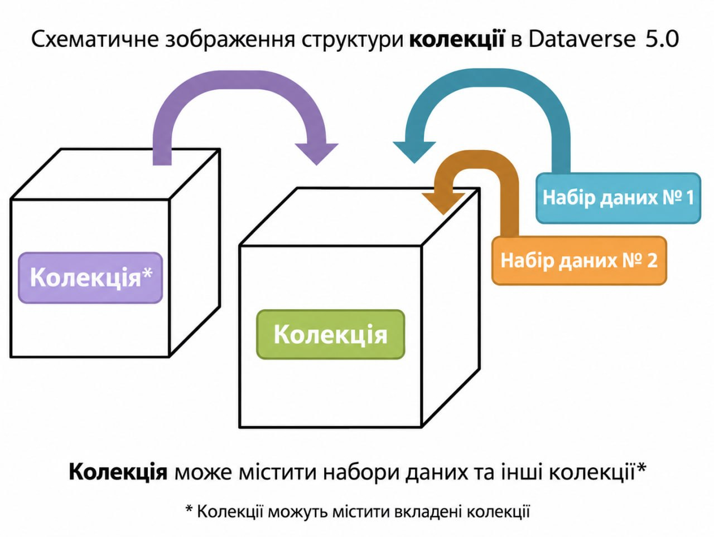

Колекція Dataverse — це контейнер для наборів даних (дослідницьких даних, коду, документації та метаданих) і інших колекцій Dataverse, який може бути створений для окремих дослідників, відділів, журналів та організацій.

Коли користувач створює колекцію Dataverse, він за замовчуванням стає адміністратором цієї колекції Dataverse. Адміністратор колекції Dataverse має доступ до управління налаштуваннями, описаними в цьому посібнику.
Створити колекцію Dataverse легко, але спочатку ви маєте бути зареєстрованим користувачем (див. Посібник із створення та управління обліковим записом). Увійшовши в систему, натисніть кнопку "Add Data" (Додати дані) або посилання "Add Data" на навігаційній панелі, і в спадному меню виберіть "New Dataverse" (Нова колекція Dataverse).
Щоб відредагувати колекцію Dataverse, перейдіть на її цільову сторінку та натисніть кнопку "Edit Dataverse" (Редагувати Dataverse), де вам будуть представлені такі варіанти редагування:
Сторінка загальної інформації — це місце, де ви можете редагувати інформацію, заповнену під час створення колекції. Якщо вам потрібно змінити контактну електронну пошту, це можна зробити тут. Крім того, ви можете змінити елементи метаданих, поля, що вимагаються або приховуються, і оновити фасети.
Підказка: Поля метаданих, які ви вибрали як обов'язкові, з'являться у формі створення набору даних (Create Dataset).
Функції теми надають вам можливість налаштувати вигляд вашої колекції Dataverse. Ви можете:
Підтримувані типи зображень: JPEG, TIFF або PNG до 500 КБ.
Функція віджетів надає вам код для розміщення на вашому особистому вебсайті для відображення вашої колекції Dataverse.
Цей віджет додасть на ваш вебсайт вікно пошуку, пов'язане з вашою колекцією Dataverse. Користувачі перенаправляються до вашої колекції Dataverse в новому вікні браузера, щоб відобразити результати пошуку для термінів, введених у поле.
Цей віджет надає список усіх ваших колекцій та наборів даних Dataverse для користувачів для перегляду, сортування, фільтрування чи пошуку.
Облікові записи користувачів інсталяції Dataverse можуть отримати ролі, які визначають, які дії їм дозволено виконувати в певних колекціях Dataverse, наборах даних та/або файлах. Кожна роль має набір дозволів.
Ролі та дозволи також можна призначати групам.
Адміністратори колекції Dataverse можуть призначати ролі та дозволи користувачам своєї колекції. Якщо ви є адміністратором, ви знайдете посилання на сторінку "Permissions" у спадному меню "Edit" на сторінці колекції.
Натискання на Permissions перенесе вас на цю сторінку:

Коли ви перейдете на сторінку дозволів колекції Dataverse, ви побачите три розділи:
Permissions (Дозволи): Тут ви можете визначити вимоги, які визначають, які типи користувачів можуть додавати набори даних і підколекції Dataverse до вашої колекції, і які дозволи їм будуть надані при цьому.
Users/Groups (Користувачі/Групи): Тут ви можете призначати ролі конкретним користувачам або групам, визначаючи, які дії їм дозволено виконувати у вашій колекції. Ви також можете переглянути список усіх користувачів, яким призначено ролі для вашої колекції Dataverse, і за бажанням видалити їхні ролі.
Roles (Ролі): Тут ви можете навести повний список ролей, які можуть бути призначені користувачам вашої колекції Dataverse. Для кожної ролі перелічені дозволи, які вона пропонує.
Зверніть увагу: навіть у новоствореній колекції Dataverse ви можете побачити, що користувачам і групам уже надано
ролі, якщо у вашій інсталяції встановлено :InheritParentRoleAssignments. Додаткову інформацію про це
налаштування див. у розділі Configuration Посібника зі встановлення.
На вкладці Permissions ви можете натиснути кнопку "Edit Access" (Редагувати доступ), щоб відкрити вікно, де можна налаштувати права доступу для додавання наборів даних і те, які дозволи надаються тим, хто робить додавання до вашої колекції Dataverse.

Перше запитання на цій сторінці дозволяє визначити, наскільки відкрита ваша колекція Dataverse для нових додавань - ви можете визначити, чи має уся база користувачів (всі авторизовані користувачі) можливість додавати набори даних або підколекції Dataverse до вашої колекції.
Друге запитання на цій сторінці дозволяє вибрати роль (а отже, і дозволи), що надається користувачам, які додають набір даних до вашої колекції Dataverse. Вибрана вами роль буде автоматично надана будь-якому користувачеві, який створює набір даних у вашій колекції Dataverse, саме в момент його створення. Ця роль визначає їхні дозволи для створеного ними набору даних. Головна відмінність між двома ролями полягає в тому, що куратори (curators) можуть публікувати власні набори даних, тоді як контриб'ютори (contributors) повинні відправити набір даних на перевірку перед публікацією. Крім того, куратори можуть керувати дозволами набору даних. Зверніть увагу, що це налаштування не застосовується ретроактивно до користувачів, які раніше додали набори даних до вашої колекції Dataverse; воно поширюється лише на користувачів, які додаватимуть нові набори даних у майбутньому.
Обидва ці налаштування можна змінити в будь-який час.
На вкладці "Users/Groups" ви можете додавати, редагувати або видаляти ролі. Наприклад, надання ролі "Contributor" вашому асистенту з досліджень дасть йому такі дозволи у вашій колекції: "ViewUnpublishedDataset", "DownloadFile", "EditDataset", і "DeleteDatasetDraft", але він не зможе публікувати набори даних. Щоб надати цю можливість, потрібна роль "Curator". Користувачі й групи можуть мати кілька ролей одночасно, і ці ролі можна видалити будь-коли. Всі ролі перераховані на вкладці "Roles" цієї ж сторінки.

Зверніть увагу: Роль "Dataset Creator" дозволяє створення нових наборів даних у колекції. Роль "Contributor", призначена на рівні набору даних, дозволяє редагувати конкретний набір даних. Альтернативно, роль "Contributor" на рівні колекції Dataverse дозволяє редагувати всі набори даних у цій колекції.

Примітка: Якщо вам потрібно призначити роль ВСІМ обліковим записам користувачів у системі Dataverse, ви можете призначити роль групі :authenticated-users.
Шаблони корисні, коли ви хочете надати користувацькі інструкції щодо того, як заповнювати поле, або маєте кілька наборів даних з однаковою інформацією у багатьох полях. У Dataverse Software 4.0+ шаблони створюються на рівні колекції Dataverse.
Як створити шаблон?
* Зверніть увагу, що вибір полів метаданих, які є прихованими, обов'язковими або необов'язковими, здійснюється на сторінці General Information колекції Dataverse.
Гостьові книги дозволяють вам збирати дані про те, хто завантажує файли з ваших наборів даних. Ви можете налаштувати їх так, щоб збирати облікову інформацію користувачів, а також створювати власні запитання (наприклад: "Для чого ви плануєте використовувати ці дані?"). Зібрані дані можна експортувати у вигляді CSV для використання поза межами Dataverse.
Як створити гостьову книгу?
Що можна робити з гостьовою книгою?
Це спосіб відображати субколекції Dataverse у вашій колекції, на які ви хочете звернути увагу користувачів. Натисніть на Featured Dataverse Collections, щоб вибрати субколекції, які будуть показуватись.
Зв'язування набору даних дозволяє власнику колекції Dataverse "прив'язати" свою колекцію Dataverse до набору даних, який існує поза цією колекцією Dataverse, щоб він відображався у списку вмісту його колекції Dataverse, не перебуваючи в ній фактично. Ви можете прив'язувати набори даних інших користувачів до вашої колекції Dataverse, але це не передає вам прав на їх редагування. Пов'язаний набір даних все одно залишатиметься під контролем початкового користувача.
Щоб зв'язати набір даних, вам потрібен дозвіл "Publish Dataset" (Публікувати набір даних). Ви повинні перейти до цього набору даних і натиснути білу кнопку "Link" у верхньому правому куті сторінки набору даних.
Аналогічно до зв'язування наборів даних, зв'язування колекцій Dataverse дозволяє власнику "прив'язати" свою колекцію до іншої колекції. Наразі можливість зв'язування колекцій є ексклюзивною функцією для суперкористувачів (superuser).
Якщо вам потрібно мати колекцію Dataverse, пов'язану з вашою колекцією, будь ласка, зверніться до служби підтримки вашої інсталяції Dataverse.
Коли ваша колекція Dataverse буде готова до оприлюднення, перейдіть на сторінку вашої колекції та натисніть кнопку "Publish" (Опублікувати) праворуч сторінки. З'явиться спливаюче вікно для підтвердження того, що ви готові до публікації, оскільки після публікації колекція Dataverse більше не може бути неопублікована (unpublished).